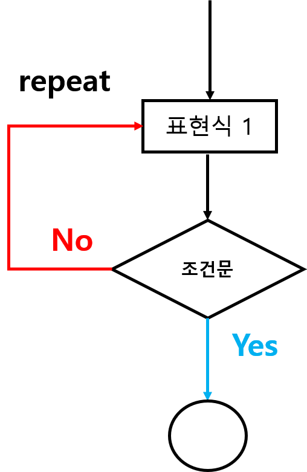
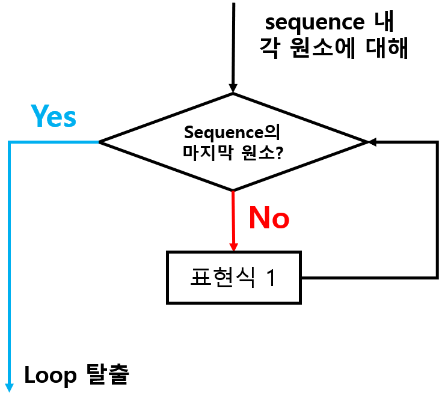

2.4 반복문(Looping)
Prerequisite
- 프로그램 또는 알고리즘 구현 시 특정 문장 또는 표현을 반복해야만 하는 상황이 발생
- 특히 시뮬레이션 시 반복문은 거의 필수적임
- 반복문을 통해 코딩의 효율을 극대화 할 수 있음
- 반복문은 특정 변수의 값을 갱신(update) 하기 위해 주로 사용
- 통상적으로 특정 변수의 값을 갱신하기 위해 변수 값을 초기화(initialize)
- 몇 번 반복이라는 정의가 없는 상태에서 특정 조건이 거짓(FALSE)이 될 때 까지 계속 반복
2.4.1 repeat 구문
repeat다음에 오는 표현식을 무한 반복(infinite loop)
[1] "무한 루프에 걸림...ESC 키 누르시오!!"
[1] "무한 루프에 걸림...ESC 키 누르시오!!"
[1] "무한 루프에 걸림...ESC 키 누르시오!!"
[1] "무한 루프에 걸림...ESC 키 누르시오!!"
[1] "무한 루프에 걸림...ESC 키 누르시오!!"
...
...- 특정 작업에 대해 블록을 지정(중괄호)하고 블록 안에 표현 가능
- 일반적으로 특정 조건(
if (조건) break)을 두어 무한루프에서 탈출 if문의 조건은 언제 반복이 끝날 지를 제어하는 변수로 반복변수(iteration variable) 이라고도 함- 언제까지(until) 반복(repeat) \(\rightarrow\) REPEAT-UNTIL 구문으로 표현

Figure 2.6: REPEAT 구문 flow-chart
# REPEAT-UNTIL 예시 1
# 1:100 까지 합 계산 함수
tot <- 0; i <- 1 # 사용 변수 초기화 (update 변수)
repeat {
tot <- tot + i
if (i >= 100) break # i는 반복 변수
i <- i + 1
}
tot
# check
sum(1:100)[1] 5050
[1] 5050
tot에i를 더한 후i가 조건을 만족하는지 확인- 조건에 부합하지 않으면 다음 문장 실행(
i에 1을 증가 후 업데이트) 1. 의 작업을 반복(loop)i가 조건에 부합하면 반복 종료
# REPEAT 예시 2
# 1에서 20 사이 숫자 알아맞추기 게임
n <- 20
number <- sample(1:n, size = 1)
cat("1에서 ", n, "까지 숫자 알아 맞추기", sep = "")
repeat {
guess <- readline("어떤 숫자를 생각하시나요? (종료: q 입력) ")
if (guess == "q") {
cat("재미가 없나봐요.\n")
break
} else if (as.numeric(guess) == number) {
cat("천재인데요?ㅋㅋㅋ")
break
}
# 틀리면 계속 반복
}
guess에readline()으로부터 값 입력guess값이q이면 종료guess값이number와 일치하면 종료- 2.와 3. 조건에 부합하지 않으면
guess값을 반복적으로 입력
어떤 숫자를 생각하시나요? (종료: q 입력) 1
어떤 숫자를 생각하시나요? (종료: q 입력) 2
어떤 숫자를 생각하시나요? (종료: q 입력) 3
천재인데요?ㅋㅋㅋ2.4.2 while 구문
while에 지정된 조건이 참이면 계속해서 반복repeat는 반복이 처음부터 시작되는 반면,while문은 조건을 먼저 평가한 후 반복이 시작됨.while (FALSE)인 경우 루프 본문 코드가 실행되지 않음while (TRUE)는repeat구문과 동일while문 의 일반적 형태

Figure 2.7: WHILE 구문 flow-chart
# WHILE 구문 예시 1
# 1:100 까지 합 계산 함수
tot <- 0; i <- 1 # 사용 변수 초기화 (update 변수)
while (i <= 100) {
tot <- tot + i
i <- i + 1
}
tot[1] 5050
- 초기값
i가 조건i <= 100인지 확인- 참인 경우
tot + i를 통해tot을 업데이트 한 다음i를 1만큼 증가- 만약
i에 대한 조건 평가 결과가 거짓이면while구문을 빠져나감
# while 문 조건이 TRUE 인 경우
tot <- 0; i <- 1 # 사용 변수 초기화 (update 변수)
while (TRUE) {
tot <- tot + i
if (i >= 100) break
i <- i + 1
}
tot[1] 5050
while의 조건이 참이기 때문에 무한 반복- 단
i가 100과 같거나 클 경우 구문 탈출- 그 전 까지는
tot와i를 갱신
# WHILE 구문 예시 2
# 문자열 벡터에서 특정 문자열의 인덱스를 반환
txtvec <- c("R", "package", "flow-control", "while", "if", "for", "repeat")
found <- FALSE
i <- 1
word <- readline("검색할 텍스트: ")
while (!found & i <= length(txtvec)) {
if (txtvec[i] == word) {
found <- TRUE
break
}
cat(i, " 번째 위치에 해당 단어가 존재하지 않습니다.\n", sep="")
i <- i + 1
}
if (found) {
cat(i, " 번째 위치에 ", word, "를 찾았습니다.", sep = "")
} else {
cat(word, " 단어는 해당 문자열 벡터에 존재하지 않습니다.\n", sep = "")
}
found = FALSE,i = 1을 초기값으로 입력readline()으로 입력한 텍스트를word에 저장found가 참이고i가 텍스트 벡터의 길이 값과 같을 때 까지 다음 구문 반복txtvec각 원소와word값이 같은지 확인
while 입력 결과
1 번째 위치에 해당 단어가 존재하지 않습니다.
2 번째 위치에 해당 단어가 존재하지 않습니다.
3 번째 위치에 해당 단어가 존재하지 않습니다.
4 번째 위치에 while 를 찾았습니다.
temp 입력 결과
1 번째 위치에 해당 단어가 존재하지 않습니다.
2 번째 위치에 해당 단어가 존재하지 않습니다.
3 번째 위치에 해당 단어가 존재하지 않습니다.
4 번째 위치에 해당 단어가 존재하지 않습니다.
5 번째 위치에 해당 단어가 존재하지 않습니다.
6 번째 위치에 해당 단어가 존재하지 않습니다.
7 번째 위치에 해당 단어가 존재하지 않습니다.
temp 단어는 해당 문자열 벡터에 존재하지 않습니다.repeat,while과 같이 반복의 횟수가 지정되지 않는 반목구문을 불확정 반복문(indefinite loop)이라고 함.- 다음에 배울
for구문은 위 두 반복문과는 다르게 반복의 범위를 명확히 지정하기 때문에 확정 반복문(definite loop)라고 함.
2.4.3 for 구문
- 가장 많이 사용되는 반복구문으로 일반적인 형태는 아래와 같음
- R에서
sequence은 특정 유형의 벡터이며, 반복변수에sequence의 원소를 순차적으로 할당함 - 반복변수는
for반복문 안의표현식 1에서 사용됨

Figure 2.8: FOR 구문 flow-chart
#for 문 예시 1
student <- readxl::read_excel("data/stat-students.xlsx")
student_name <- student$이름
for (s in student_name) {
cat(s, "학생!! 즐거운 명절 보내세요^^\n")
}김세민 학생!! 즐거운 명절 보내세요^^
김기랑 학생!! 즐거운 명절 보내세요^^
이종영 학생!! 즐거운 명절 보내세요^^
이원규 학생!! 즐거운 명절 보내세요^^
황보영 학생!! 즐거운 명절 보내세요^^
구나현 학생!! 즐거운 명절 보내세요^^
엄용현 학생!! 즐거운 명절 보내세요^^
오동원 학생!! 즐거운 명절 보내세요^^
윤지우 학생!! 즐거운 명절 보내세요^^
이근범 학생!! 즐거운 명절 보내세요^^
이승호 학생!! 즐거운 명절 보내세요^^
이희도 학생!! 즐거운 명절 보내세요^^
정보경 학생!! 즐거운 명절 보내세요^^
채시진 학생!! 즐거운 명절 보내세요^^
최호진 학생!! 즐거운 명절 보내세요^^
박인혜 학생!! 즐거운 명절 보내세요^^
박준기 학생!! 즐거운 명절 보내세요^^
최소미 학생!! 즐거운 명절 보내세요^^
백승완 학생!! 즐거운 명절 보내세요^^
김지원 학생!! 즐거운 명절 보내세요^^
신형원 학생!! 즐거운 명절 보내세요^^
임현정 학생!! 즐거운 명절 보내세요^^
정수빈 학생!! 즐거운 명절 보내세요^^
최예린 학생!! 즐거운 명절 보내세요^^
황정인 학생!! 즐거운 명절 보내세요^^
- student_name의 첫 번째 원소를 s에 할당
- for 구문 안에 표현 실행
- student_name의 마지막 원소까지 반복
# 위 예시와 동일한 표현
## 인덱싱을 사용
for (i in 1:length(student_name)) {
cat(student_name[i], "학생!! 즐거운 명절 보내세요^^\n")
}
## sequence를 만드는 함수 seq_along() 사용
for (i in seq_along(student_name)) {
cat(student_name[i], "학생!! 즐거운 명절 보내세요^^\n")
}for구문 안에for문을 1개 이상 중첩 가능
## 2중 for 문 예시
set.seed(12345)
id <- sample(1:length(student_name), 5)
sel_student <- student_name[id]
for (i in seq_along(student_name)) {
for (j in seq_along(sel_student)) {
if (student_name[i] == sel_student[j]) {
cat(sel_student[j], "님!! 당첨 축하 드립니다!!\n")
}
}
}김기랑 님!! 당첨 축하 드립니다!!
이승호 님!! 당첨 축하 드립니다!!
채시진 님!! 당첨 축하 드립니다!!
박인혜 님!! 당첨 축하 드립니다!!
백승완 님!! 당첨 축하 드립니다!!불확정 반복문 학습 시 무한루프로부터
break를 통해 루프에서 탈출루프를 완전히 탈출하지 않고 현재 반복을 중지하고 그 다음 반복을 진행하고 싶을 경우
next예약어를 사용
# 알파벳 e와 일치하는 경우에만 텍스트 메세지 출력
vec <- c("a","e", "e", "i", "o", "u", "e", "z")
word <- "e"
for (i in 1:length(vec)) {
if (vec[i] != word) next
cat(word, "가", i, "번 째 인덱스에 있네요!!\n")
}e 가 2 번 째 인덱스에 있네요!!
e 가 3 번 째 인덱스에 있네요!!
e 가 7 번 째 인덱스에 있네요!!